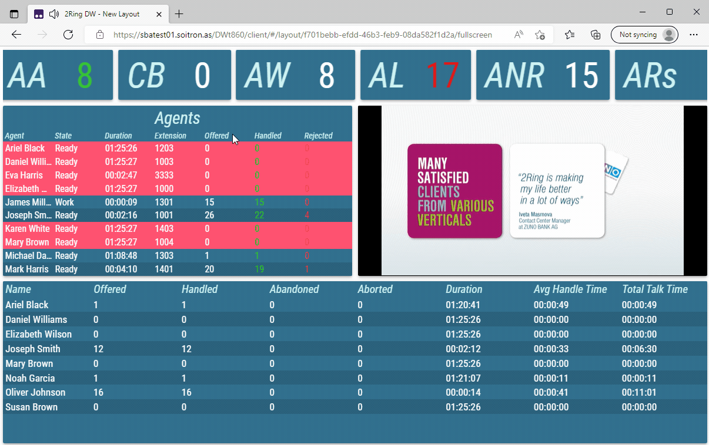

Full Screen Mode¶
- Full Screen mode can be toggled in one of two ways:
Clicking the button while viewing Layout
Double clicking or double tapping anywhere inside the Layout.
Figure 1: Classic and Full Screen mode
When Full Screen mode is activated, the Layout cover maximum available space of the browser window. The navigation and 2Ring toolbars are hidden. Moving the cursor to the top of the screen, temporarily displays the navigation toolbar. In Full Screen mode mouse cursor is automatically hidden after 5 seconds of inactivity.
Figure 2: Full Screen mode with displayed navigation toolbar
On some mobile devices, Full Screen mode also hides the address bar of the browser. iOS devices do not support hiding of the address bar in browser. Please refer to the following link to remove the address bar from iOS devices.
Navigating to the Layout list exits the Full Screen mode